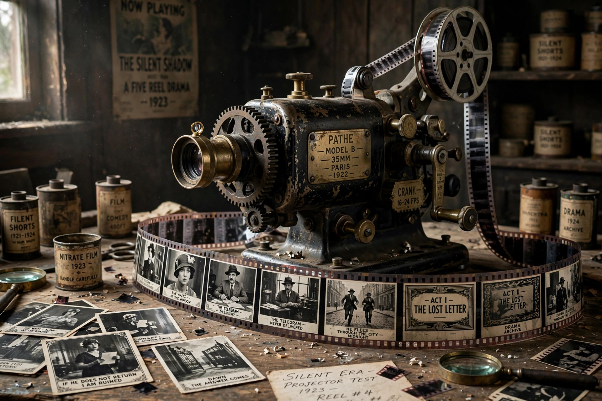

| History of film | |
|---|---|
| First motion picture | Roundhay Garden Scene (1888) |
| First public screening | Paris, 28 December 1895 (Lumière brothers) |
| First "talkie" feature | The Jazz Singer (1927) |
| Major eras | Silent era, Golden Age of Hollywood, New Waves, Blockbuster era, Digital era |
The history of film chronicles the development of cinema from nineteenth-century experiments in motion photography to the global digital industry of today. Film emerged as an art form and mass medium with remarkable speed: within three decades of the first public screenings, it had become the dominant popular entertainment of the industrialized world.
Pre-cinema devices such as the zoetrope and Eadweard Muybridge's motion studies in the 1870s demonstrated that still photographs shown in rapid succession create the illusion of movement. Louis Le Prince shot the earliest surviving motion picture, Roundhay Garden Scene, in 1888. Thomas Edison's Kinetoscope (1893) offered peephole viewing, but the decisive step came in Paris on 28 December 1895, when Auguste and Louis Lumière publicly projected films with their Cinématographe — among them Workers Leaving the Lumière Factory. Georges Méliès pioneered special effects and narrative fantasy in works such as A Trip to the Moon (1902).
From roughly 1905, permanent theaters (nickelodeons) spread, and filmmakers such as D. W. Griffith (The Birth of a Nation, 1915; Intolerance, 1916) developed the grammar of editing, cross-cutting, and close-ups. Hollywood became the industry's center during the First World War. Comedians Charlie Chaplin and Buster Keaton, German Expressionist films such as The Cabinet of Dr. Caligari (1920), and Soviet montage directors such as Sergei Eisenstein (Battleship Potemkin, 1925) defined the silent art at its peak.
The success of The Jazz Singer (1927) ended the silent era within a few years. Hollywood's vertically integrated studio system dominated world cinema through the 1930s and 1940s — the "Golden Age" — while Technicolor became standard by the end of the 1930s. Citizen Kane (1941) by Orson Welles is frequently cited as the greatest film ever made.
After the Second World War, television challenged cinema's dominance. Italian neorealism, the French New Wave (Godard, Truffaut), Japanese masters such as Akira Kurosawa and Yasujirō Ozu, and Indian director Satyajit Ray broadened film's artistic horizons. In the late 1960s and 1970s, "New Hollywood" directors — Coppola, Scorsese, Spielberg, Lucas — revitalized American cinema, and blockbusters such as Jaws (1975) and Star Wars (1977) reshaped its economics.
From the 1990s, computer-generated imagery (pioneered by Jurassic Park, 1993), digital cameras and projection, and finally streaming platforms transformed production and distribution. World cinema — including the Korean, Iranian, and Nigerian industries — gained global audiences, while franchise filmmaking came to dominate theatrical box office.
See also: Film, Cinema of the United States, Silent film